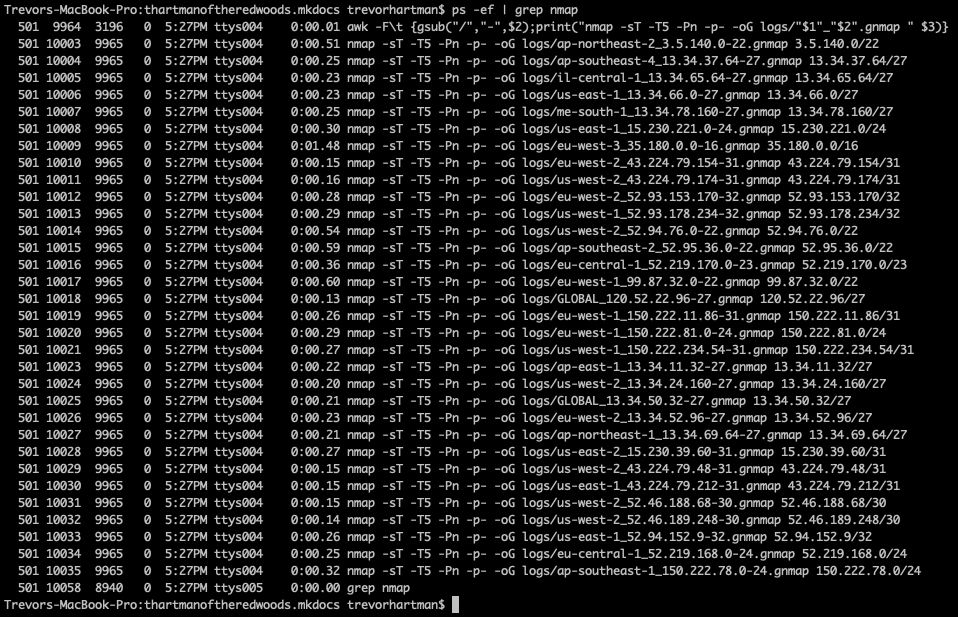

Parallel
Example of Parallels Nmap
Info
Here I explore the use of several commands to speed up the nmap scanning process. Curl is used to pull down our scanning target, jq is used to parse and partially format the json from the downloaded ip list, awk is then used to generate multiple nmap commands, and finally parallel is used to execute them in parallel. So let’s get started and break this down.
The Command
| curl https://ip-ranges.amazonaws.com/ip-ranges.json | jq -r '.prefixes[] | [.region, .ip_prefix, .ip_prefix]|@tsv' | awk -F'\t' '{gsub("/","-",$2);print("nmap -sT -T5 -Pn -p- -oG logs/"$1"_"$2".gnmap " $3)}' | parallel --jobs 32
|
Curl
| curl https://ip-ranges.amazonaws.com/ip-ranges.json
|
- Curl makes a GET request to the Amazon URL holding a json object of Amazon AWS IPs
- The json output looks something like below:
1
2
3
4
5
6
7
8
9
10
11
12 | {
"syncToken": "1660666986",
"createDate": "2022-08-16-16-23-06",
"prefixes": [
{
"ip_prefix": "3.5.140.0/22",
"region": "ap-northeast-2",
"service": "AMAZON",
"network_border_group": "ap-northeast-2"
},
...
}
|
Jq
| | jq -r '.prefixes[] | [.region, .ip_prefix, .ip_prefix]|@tsv'
|
- jq’s -r option tells the command to output in raw format (i.e. no extra quotes or formatting)
.prefixes[] grabs all the elements in the prefixes array as seen in the output.| cycles over the elements in the array.[.region, .ip_prefix, .ip_prefix] captures the region and ip_prefix commands into a new 3 element array|@tsv cycles over the new array elements and outputs them as -r a raw tab separated line.- The output will look something like below:
| ap-northeast-2 3.5.140.0/22 3.5.140.0/22
ap-southeast-4 13.34.37.64/27 13.34.37.64/27
il-central-1 13.34.65.64/27 13.34.65.64/27
us-east-1 13.34.66.0/27 13.34.66.0/27
me-south-1 13.34.78.160/27 13.34.78.160/27
|
Awk
| | awk -F'\t' '{gsub("/","-",$2);print("nmap -sT -T5 -Pn -p- -oG logs/"$1"_"$2".gnmap " $3)}'
|
awk -F'\t' splits the line by line input into 3 variables $1 will equal region $2 will equal the first ip_prefix, and $3 will equal the second ip_prefix columngsub("/","-",$2); this replaces any subnet slashes in the first ip_prefix column with a -print("nmap -sT -T5 -Pn -p- -oG logs/"$1"_"$2".gnmap " $3) this prints out the nmap command but substitutes $1 (i.e. the region) and $2 (i.e. the gsub-ed ip_prefix) into the option building the log file. $3 remains the unmodified ip_prefix to scan, so the full output will look something like below: | nmap -sT -T5 -Pn -p- -oG logs/ap-northeast-2_3.5.140.0-22.gnmap 3.5.140.0/22
nmap -sT -T5 -Pn -p- -oG logs/ap-southeast-4_13.34.37.64-27.gnmap 13.34.37.64/27
nmap -sT -T5 -Pn -p- -oG logs/il-central-1_13.34.65.64-27.gnmap 13.34.65.64/27
nmap -sT -T5 -Pn -p- -oG logs/us-east-1_13.34.66.0-27.gnmap 13.34.66.0/27
nmap -sT -T5 -Pn -p- -oG logs/me-south-1_13.34.78.160-27.gnmap 13.34.78.160/27
|
Parallel
- This command takes the numerous lines of nmap jobs generated above and runs 32 of them in parallel.
- In this way you have increase the speed at which nmap scans to a point that will likely overheat your PC :-)
Warning
Make sure you set up a logs directory from the folder you run this so you don’t get a file system error.
Also, make sure your system can killall in case things get out of hand:
